Comptes : le mode d'emploi
L'application s'ouvre sur l'assistant. Deux gestes suffisent : photographier ses tickets et lui parler. Il enregistre, corrige, supprime et répond à vos questions. Le tableau de bord et les autres pages servent à regarder où vous en êtes (et à corriger à la main si vous préférez).
L'application lit les achats ; vous vérifiez et touchez « Tout enregistrer ».
« J'ai payé 12 € chez le boucher » : il résume, vous validez. Il répond aussi à voix haute.
L'application additionne tout, prévoit la fin du mois et prévient quand une catégorie dérape.
Pour chaque produit, l'évolution du prix dans chaque magasin, et où il est le moins cher.
Les écrans de cette noticeLes montants affichés sont des exemples fictifs, pas vos vrais comptes.
Installer et se connecter
La première fois, une seule fois.
Mettre l'application sur l'écran d'accueil du téléphone
Ouvrez l'adresse de l'application dans le navigateur du téléphone :
checkmydev.github.io/Gestion-des-comptes
- Android : touchez Installer l'application dans le cadre qui apparaît en haut.
- iPhone : touchez le bouton Partager de Safari (le carré avec une flèche ↑), puis « Sur l'écran d'accueil » et Ajouter.
L'icône panier vert apparaît alors parmi vos applications : il suffit de la toucher pour ouvrir Comptes, comme n'importe quelle autre application.
Se connecter
Entrez votre adresse e-mail et votre mot de passe, puis Se connecter. Le téléphone s'en souvient : vous ne devrez plus le refaire.
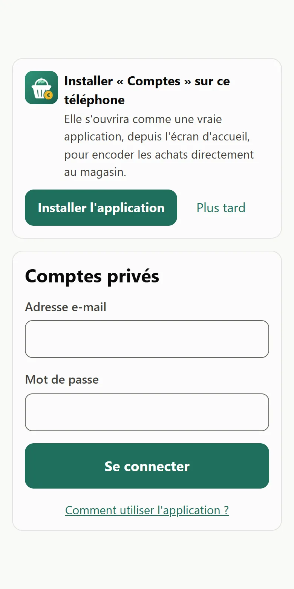
L'essentiel en deux gestes
Tous les jours : un ticket en photo, une phrase à l'assistant. Rien d'autre à faire.
📷 Photographier un ticket
L'application s'ouvre sur l'assistant. Touchez 📷 Ticket, posez le ticket bien à plat et photographiez-le en entier.
Une vingtaine de secondes plus tard, une fiche « Voici ce que j'ai lu » apparaît dans la conversation : le magasin, la date, chaque article avec son prix, et si le total correspond au ticket. Une ligne difficile à lire est surlignée en jaune avec ⚠.
Vérifiez avec le ticket, puis touchez ✓ Tout enregistrer. Rien n'est enregistré avant. Une ligne fausse ? Touchez ✏️ Corriger une ligne, ou enregistrez puis dites simplement à l'assistant « le beurre coûtait 2,29 € ».
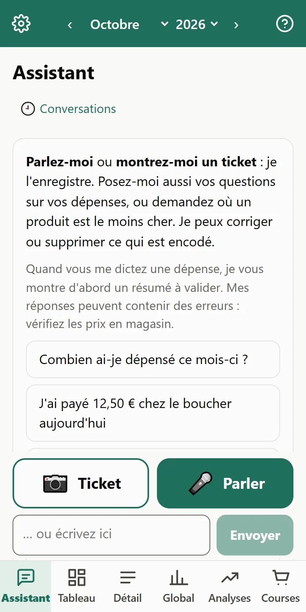
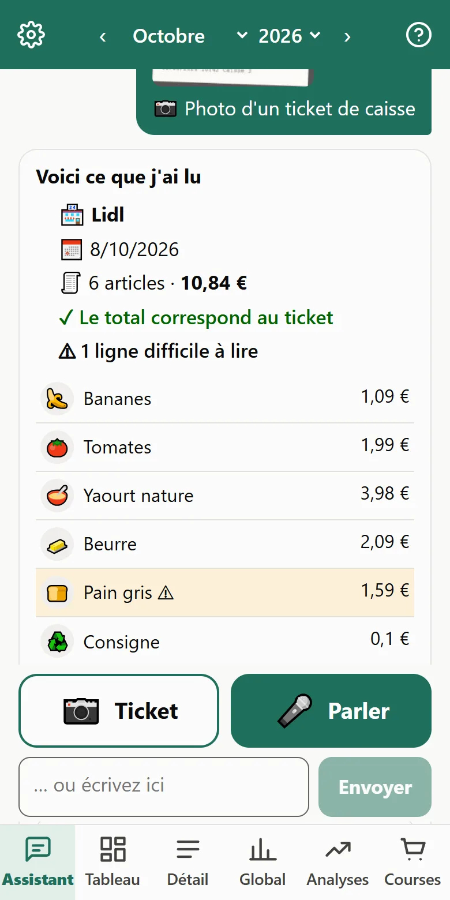
🎤 Parler à l'assistant
Touchez 🎤 Parler et dites ce que vous voulez, naturellement : « J'ai payé 12,50 € chez le boucher aujourd'hui », « le plein d'essence, 58 € chez Shell », « combien ai-je dépensé ce mois-ci ? ». Quand vous vous arrêtez de parler, la phrase part toute seule (ou touchez ⏹ Envoyer).
Pour une dépense dictée, l'assistant montre toujours un résumé de ce qu'il a compris (quoi, combien, quand, où, quel mois) et demande « Je l'enregistre ? ». Touchez ✓ Oui, j'enregistre ou ✗ Non, ou répondez « oui » à voix haute. Rien n'est enregistré sans votre accord.
Il vous répond à voix haute quand vous lui avez parlé. Sous chaque réponse, 🔊 Écouter la relit.
Il peut aussi corriger (« le croissant coûtait 1,20 € ») ou supprimer (« supprime ce que je viens d'encoder ») : il montre d'abord ce qu'il va faire. Et « annule » défait sa dernière action.
Le microLa première fois, le téléphone demande l'autorisation d'utiliser le micro : touchez Autoriser. La dictée a besoin d'internet.
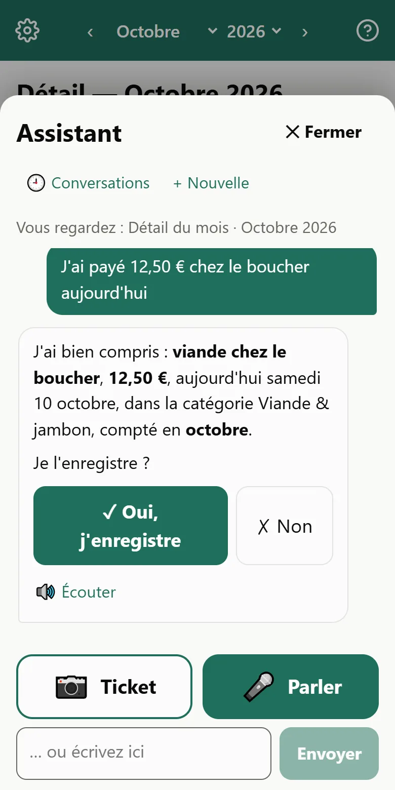
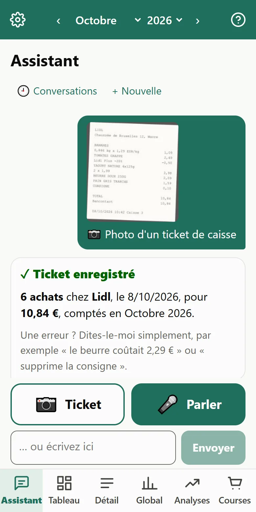
Il peut tout faire
Demandez-lui simplement, par écrit ou à voix haute :
- ajouter : un achat, la pension ou une dépense fixe du mois, un plein, un trajet, le paiement d'une facture annuelle, un mouvement d'épargne, un nouveau poste annuel ;
- corriger : un montant, une date, un magasin, le loyer de ce mois, le nom ou la catégorie d'un article, son icône, le budget d'une catégorie, le plafond annuel, la réserve « imprévus », le solde de début de mois ;
- supprimer : un achat, une ligne du mois, un plein, un paiement… (il montre d'abord ce qu'il va supprimer et attend votre « oui ») ;
- répondre : combien ce mois-ci, ce qui augmente, les factures à prévoir, où acheter moins cher.
« Annule » défait toujours sa dernière action.
L'assistant sur chaque écran
Sur le Détail, le Global, les Analyses… la bulle verte en bas à droite ouvre l'assistant par-dessus l'écran : vous gardez vos chiffres sous les yeux pendant que vous lui posez une question ou lui demandez une correction. Il sait quel écran et quel mois vous regardez.
Quand il modifie quelque chose, l'écran derrière se met à jour tout seul. ✕ Fermer referme le panneau.
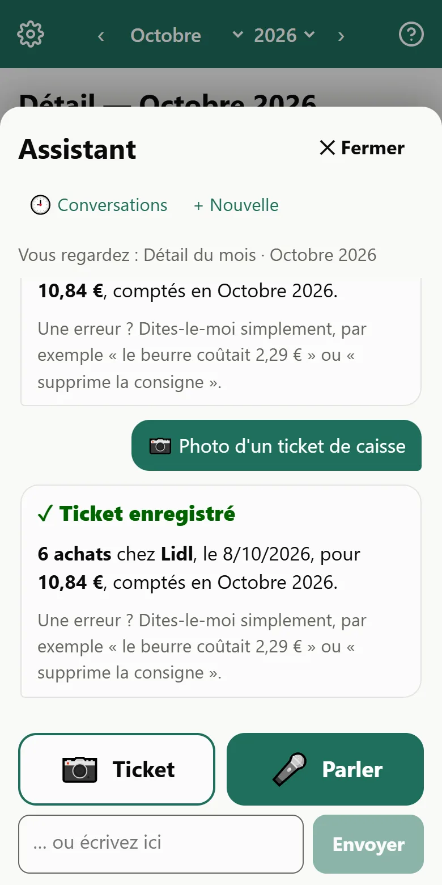
Le coup d'œil du matin : le tableau de bord
Au petit-déjeuner : où en est le mois ?
Le tableau de bord résume tout
Touchez Tableau dans la barre du bas.
En haut, le mois affiché. Le mois commence le 26, jour de la pension : « octobre » va du 26 septembre au 25 octobre. Le 26, l'application passe toute seule au mois suivant. Les flèches ‹ › permettent de revoir un autre mois.
Quatre cadres donnent l'essentiel :
- Dépenses courantes : ce qui a été dépensé ce mois-ci en nourriture, divers, pharmacie… et ce qui est prévu d'ici la fin du mois.
- Solde fin de mois : ce qu'il devrait rester sur le compte à la fin du mois.
- Épargne : le compte épargne, comparé à la réserve « imprévus » que vous vous êtes fixée.
- Dépenses annuelles : les grosses factures de l'année (assurances, taxes…) comparées au plafond prévu.
Les alertes
Juste en dessous, l'application signale ce qui mérite attention :
- trait rouge : un budget est dépassé, ou va l'être ;
- trait jaune : à surveiller ;
- trait bleu : une facture annuelle arrive bientôt, il faut la prévoir.
Plus bas, une barre par catégorie montre ce qui est dépensé par rapport au budget.
En haut, 📷 Ticket et 🎤 Parler ouvrent l'assistant. Tout en bas : + Encoder à la main, la liste de courses et les meilleurs prix (étape 3).
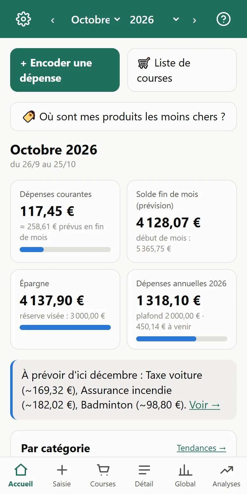
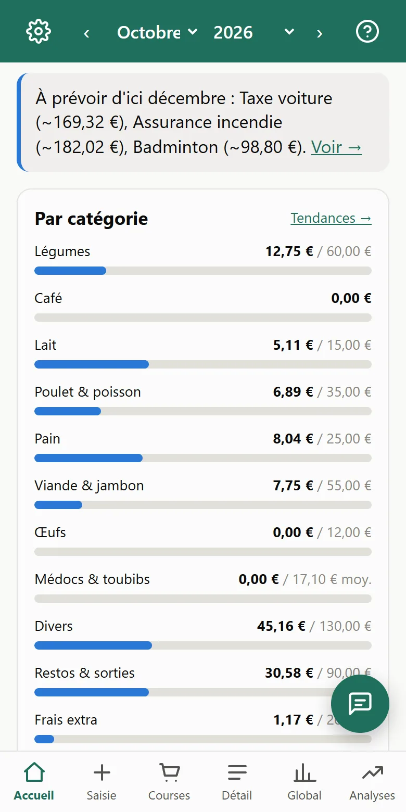
Préparer les courses au meilleur prix
Avant de partir : qu'est-ce qu'il faut racheter, et où est-ce le moins cher ?
L'application propose une liste
Touchez Courses en bas de l'écran. L'application regarde ce que vous achetez d'habitude et à quel rythme. Elle propose les articles qu'il est temps de racheter, sans dépasser le budget qu'il reste.
- Choisissez Cette semaine ou Jusqu'à la fin du mois.
- Par magasin regroupe les articles selon le magasin où ils sont les moins chers.
- Au magasin, cochez les articles au fur et à mesure.
Ce qui ne rentre pas dans le budget est rangé à part, sous « Si le budget le permet ».
AstucePlus vous encodez d'achats, plus la liste devient juste. Il faut au moins deux achats d'un même article pour que l'application connaisse son rythme.
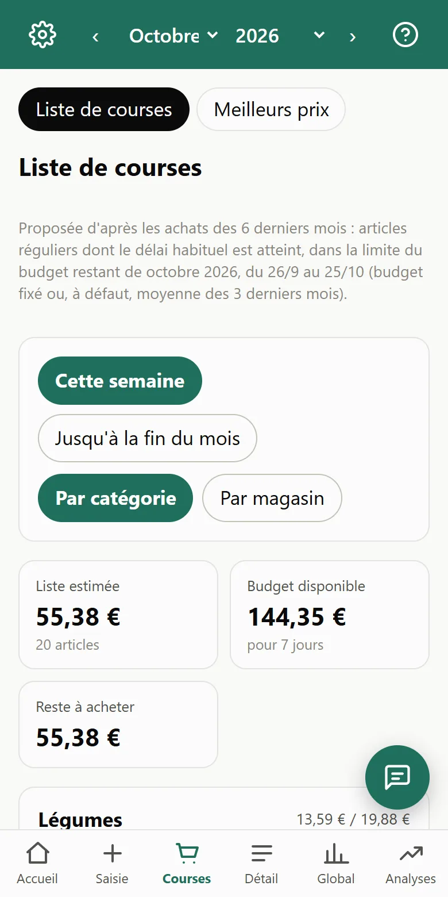
Où mes produits sont-ils les moins chers ?
En haut de la page Courses, touchez Meilleurs prix. Vous y arrivez aussi par le bouton 🏷️ Où sont mes produits les moins chers ? du tableau de bord.
Les prix des magasins y sont relevés régulièrement. La date de la dernière mise à jour est indiquée en haut de la page.
- Les magasins les moins chers : pour combien de vos produits chaque magasin propose le meilleur prix. C'est utile pour choisir où faire ses courses de la semaine.
- Une carte par produit : à gauche, le prix le moins cher et le magasin ; à droite, ce que vous payez d'habitude.
- Le pourcentage en vert indique l'économie possible. ✓ déjà au meilleur prix : rien à changer pour ce produit.
- Touchez ▸ magasins comparés pour voir le prix dans chaque magasin.
Les prix sont mis à jour sur demandeIls ne changent pas tout seuls : ce sont les prix du jour de la dernière recherche, indiqué en haut. Une promotion peut être terminée entre-temps.
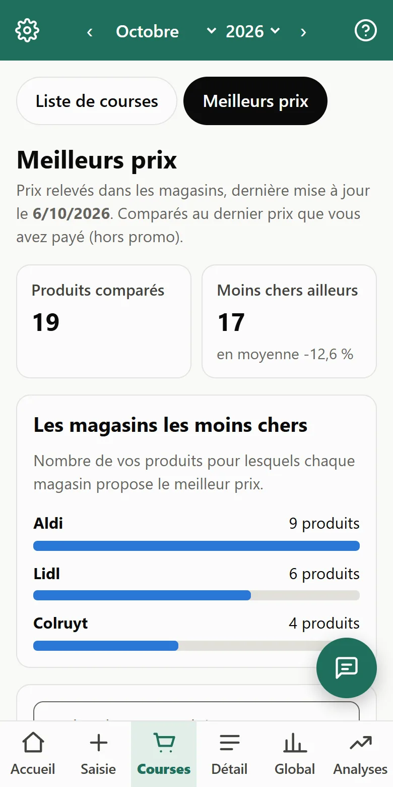
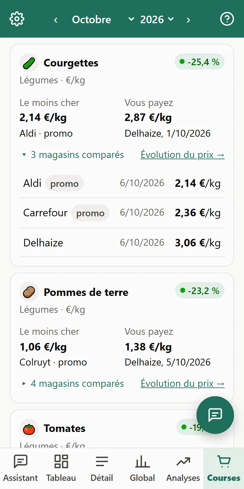
Encoder à la main
Si besoin : corriger un ticket ligne par ligne, ou encoder sans ticket ni assistant.
Corriger un ticket ligne par ligne
Le bouton ✏️ Corriger une ligne d'une fiche de ticket ouvre cet écran détaillé. Il s'ouvre aussi depuis + Encoder à la main → 📷 Scanner un ticket de caisse.
Après une vingtaine de secondes, un cadre « Voici ce que j'ai lu » résume la lecture : le magasin, la date, le nombre d'articles et le total. Il dit aussi si le total des articles correspond au ticket, et combien de lignes étaient difficiles à lire. Touchez la petite photo pour l'agrandir et comparer.
En dessous, chaque article est déjà rangé dans sa catégorie, avec son icône. Les réductions (Lidl Plus, promos) sont déduites, et les fruits et légumes pesés gardent leur poids et leur prix au kilo.
À vous de vérifier chaque ligne en la comparant au ticket : touchez un nom, une catégorie ou un montant pour le corriger, et décochez ce qui ne doit pas être enregistré. Une ligne encadrée en jaune, avec la mention « à vérifier », était difficile à lire.
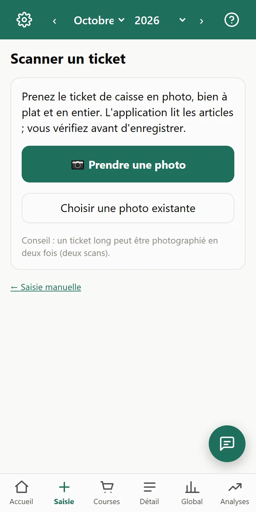
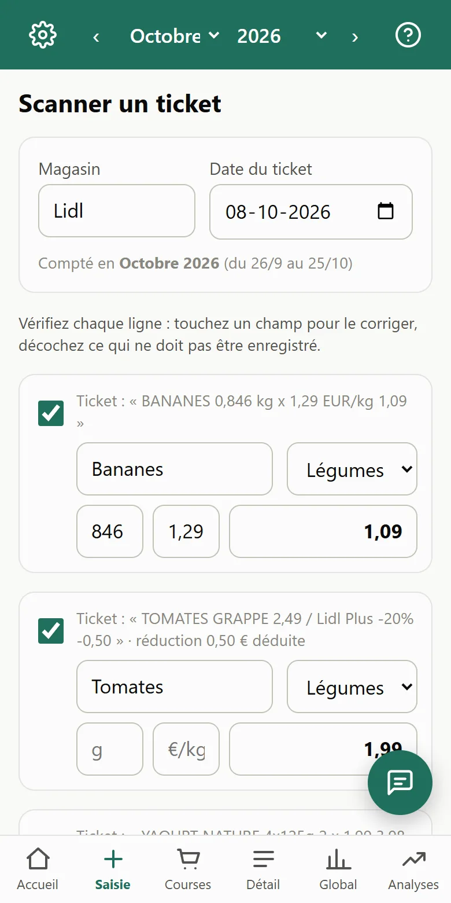
Contrôler le total, puis valider
En bas, l'application compare la somme des lignes avec le total imprimé sur le ticket. « ✓ Le total correspond au ticket » : tout est bon. Si un écart s'affiche, une ligne manque ou est mal lue : corrigez-la. Si vous validez malgré un écart, l'application vous demande de confirmer.
Touchez enfin ✓ Valider et enregistrer. Rien n'est enregistré avant ce geste. Un dernier écran récapitule ce qui a été ajouté, article par article, et dans quel mois. Les achats sont comptés dans le mois de la date du ticket. La photo n'est pas conservée.
Ticket très long ?Photographiez-le en deux fois et faites deux scans.
Vous préférez taper vous-même, ou vous n'avez pas de ticket ? Voici la saisie article par article, avec l'exemple de bananes achetées au Lidl.
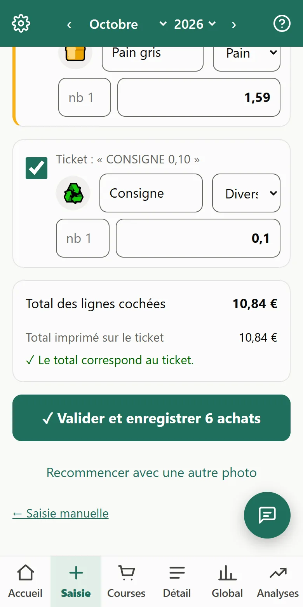
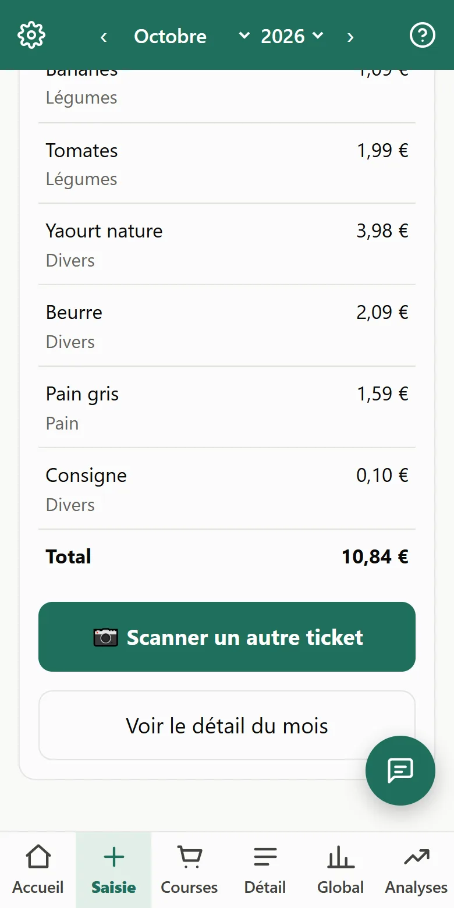
① Choisir la catégorie
En bas du tableau de bord, touchez + Encoder à la main.
Pas besoin de choisir le mois : chaque achat est compté d'après la date du ticket, et le mois commence le 26. Touchez la catégorie, ici Légumes.
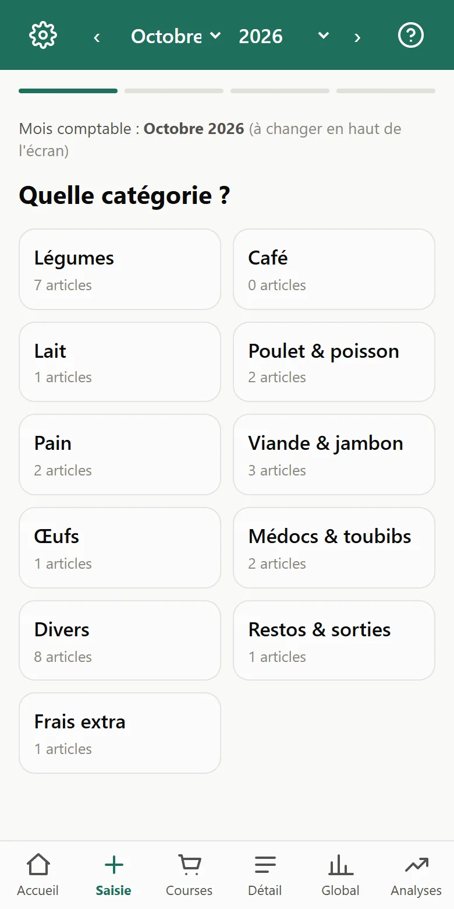
② Choisir l'article
Tapez les premières lettres, par exemple « ban » : la liste se réduit. Touchez Bananes.
Chaque article a sa petite icône (🍌 bananes, 🧀 fromage, 💊 médicaments…), choisie d'après son nom, pour le repérer d'un coup d'œil. Une icône ne vous plaît pas ? Changez-la dans les Paramètres (voir « Bon à savoir »).
Article nouveau ? Tapez son nom en entier et touchez + Ajouter « … » dans Légumes. Il sera proposé la prochaine fois.
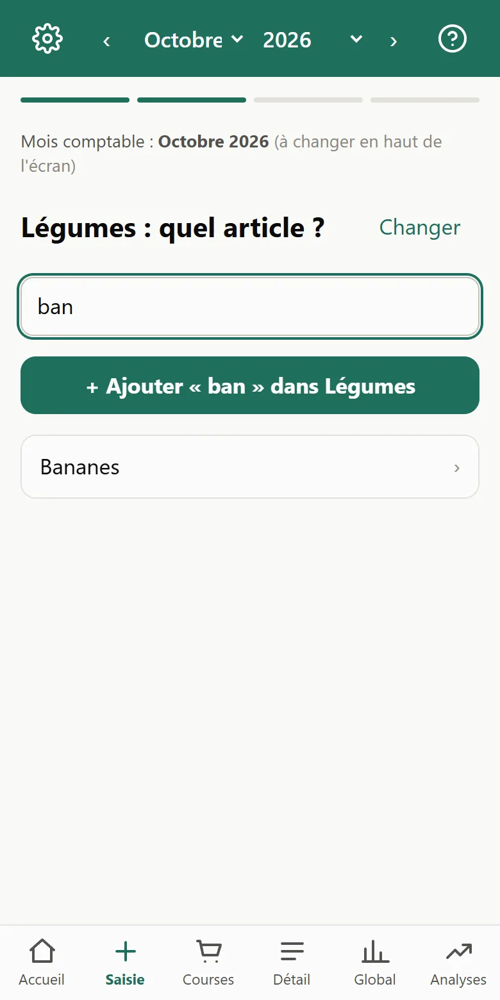
③ Remplir les informations
Le cadre bleu rappelle le dernier prix payé pour cet article : pratique pour comparer.
- Magasin : choisissez-le dans la liste (ou + Nouveau magasin…).
- Date : celle du jour est déjà remplie. Pour un ticket plus ancien, changez-la : juste en dessous, l'application indique dans quel mois l'achat sera compté.
- Pour les légumes et fruits : la quantité en grammes et le prix au kilo. L'application calcule le montant toute seule. Si l'article est en promotion, indiquez le % de promo. Sans poids ni prix au kilo, l'achat compte bien dans le budget, mais pas dans l'évolution des prix.
- Montant payé : pour les autres articles, tapez le prix payé.
- Nombre (catégorie Divers) : la case vaut 1 par défaut. Si vous en prenez plusieurs (2 Edam, 3 bouteilles…), changez-la. L'application compare ainsi le prix d'une pièce d'un achat à l'autre.
Touchez Enregistrer.
Astuce : les petits calculsPour deux paquets à 2,15 €, tapez 2*2,15 dans le montant : l'application calcule 4,30 € et met 2 dans la case Nombre toute seule. La virgule et le point fonctionnent tous les deux.
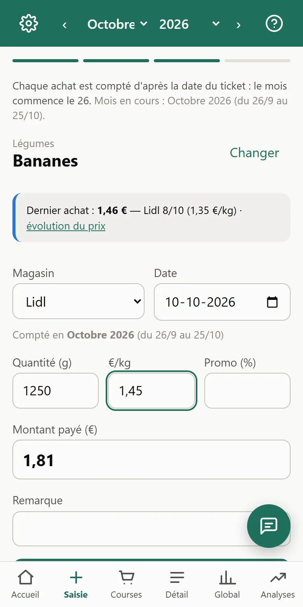
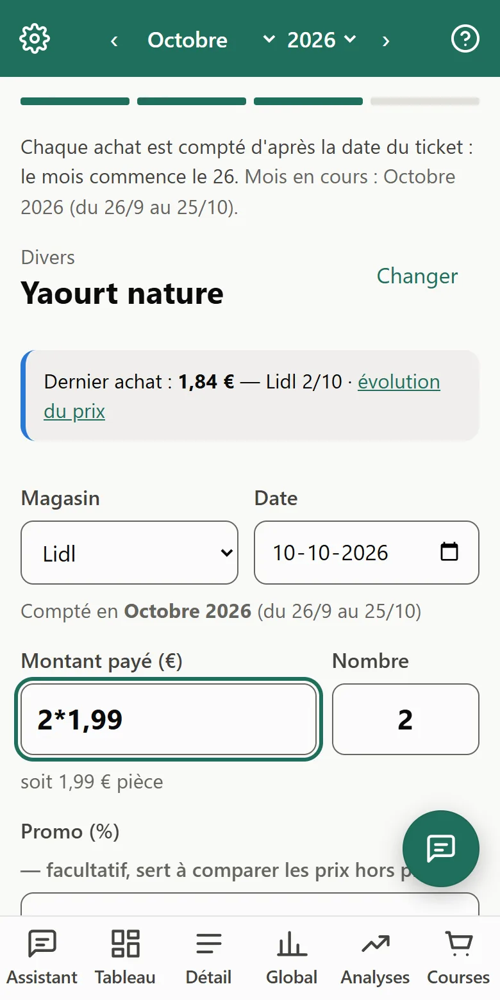
④ Un autre article ?
- Oui, dans Légumes : on enchaîne avec un autre légume.
- Oui, autre catégorie : on revient au choix de la catégorie.
- Non : c'est fini pour ce ticket.
Gain de tempsLe magasin et la date restent remplis d'un article à l'autre : un ticket de caisse se tape d'une traite.
⑤ Que voulez-vous consulter ?
Après Non, l'application propose d'ouvrir le détail du mois, le Global, l'inflation, les statistiques ou la liste de courses. Vous pouvez aussi simplement fermer l'application : tout est déjà enregistré.
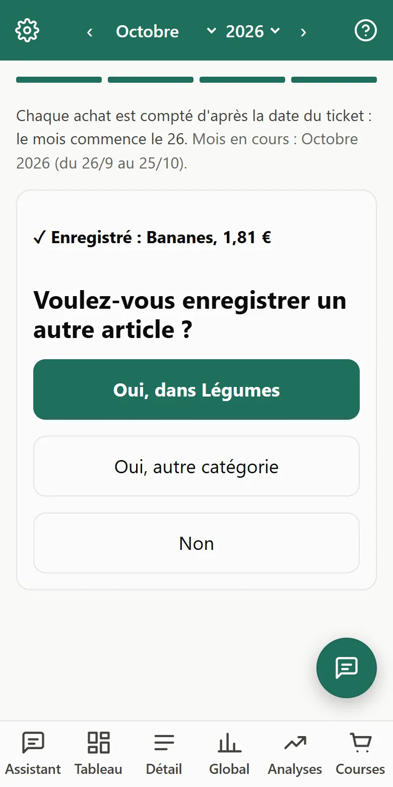
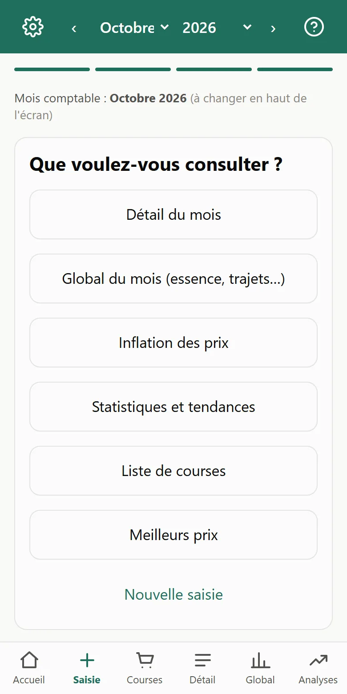
Vérifier et corriger
De retour à la maison : une faute de frappe ? Un achat oublié ?
Le détail du mois
Touchez Détail en bas. Chaque catégorie a son tableau, avec son total et son budget. Comme dans l'Excel, la colonne « Magasin + date » indique par exemple « Lidl 9/10 ».
Modifier ou supprimer une ligne
Touchez la ligne : elle s'ouvre. Corrigez puis Enregistrer les modifications, ou Supprimer.
Ajouter une ligne oubliée
Sous chaque tableau, + Ajouter une ligne ouvre la saisie directement dans la bonne catégorie.
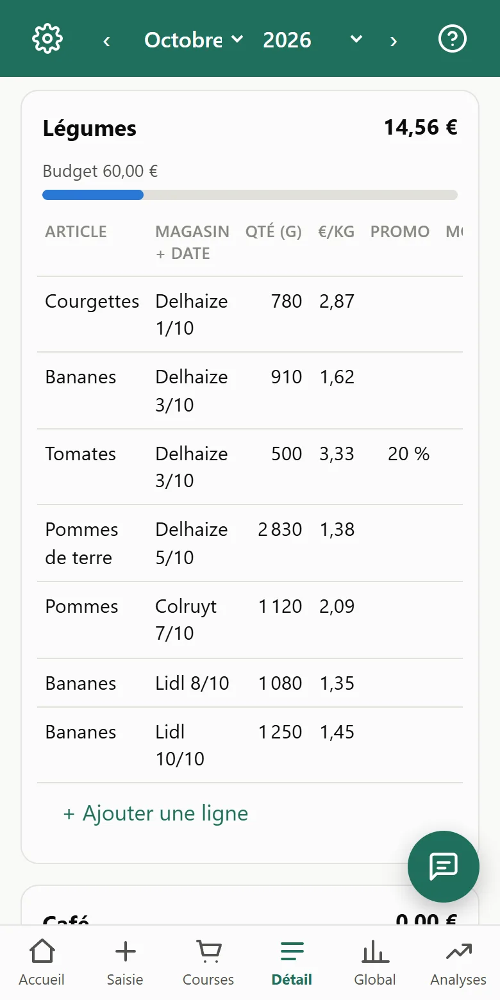
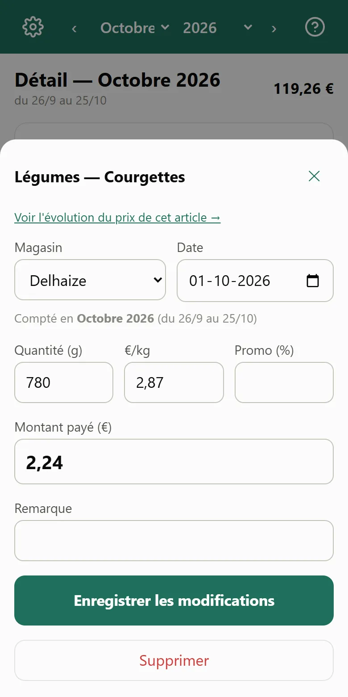
Le Global : essence, factures, épargne
Quand la pension arrive, quand on fait le plein, quand une facture tombe.
Onglet « Mois »
Touchez Global en bas. C'est le tableau « Global » de l'Excel :
- Rentrées : pension, remboursements… plus le solde de fin du mois précédent, repris automatiquement.
- Dépenses fixes : loyer, électricité, GSM… Elles sont recopiées automatiquement chaque mois : il suffit de toucher une ligne pour changer un montant.
- Dépenses courantes : le total de chaque catégorie du détail, comparé au mois précédent.
- Tout en bas, le solde de fin de mois.
Le bouton + Ajouter sous chaque bloc permet d'ajouter une ligne à tout moment.
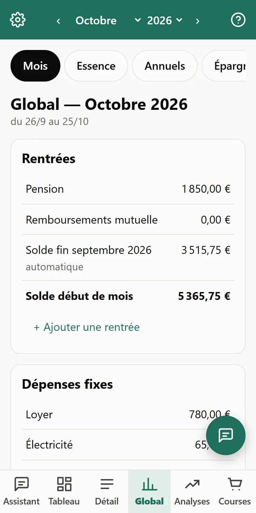
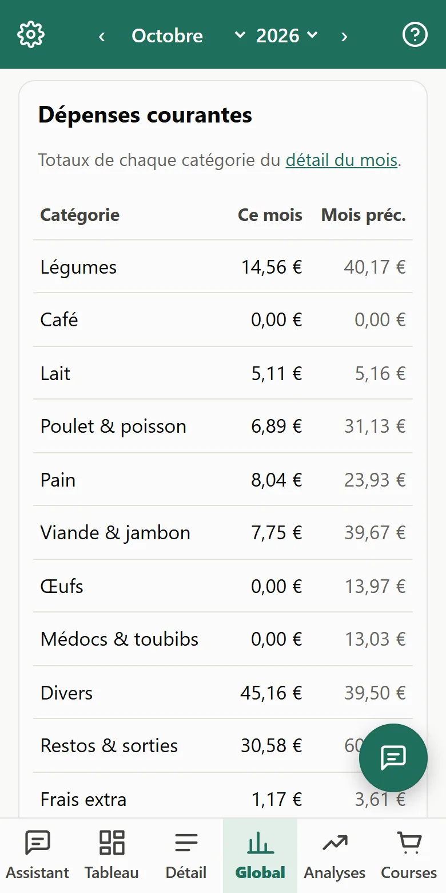
Onglet « Essence »
À chaque plein : + Ajouter un plein, avec la station, le prix au litre, les kilomètres du compteur et le total payé.
L'application calcule les kilomètres parcourus depuis le plein précédent et la consommation (litres aux 100 km). Le total est repris automatiquement dans le Global.
En dessous, les trajets extra (où, quand, km aller-retour) sont additionnés.
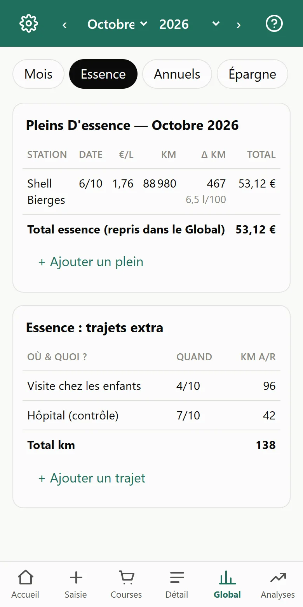
Onglet « Annuels »
Les grosses dépenses de l'année : taxe et assurance voiture, assurance incendie, eau, hospitalisation…
- Quand vous payez une facture, touchez + payé sur la bonne ligne. Si elle est payée avec l'épargne, laissez la case cochée : l'onglet Épargne est mis à jour en même temps.
- Indiquez le mois d'échéance de chaque poste (touchez son nom) : le tableau de bord vous préviendra à l'avance.
Onglet « Épargne »
Le solde du compte épargne et ses mouvements. Avec + Ajouter, un montant positif est un versement, un montant négatif (avec un signe −) est une dépense ou un transfert vers le compte courant.
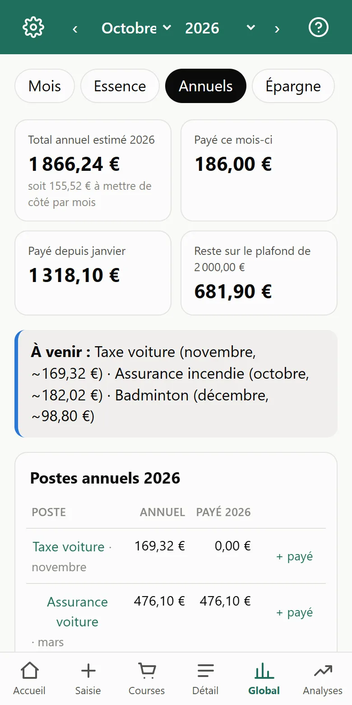
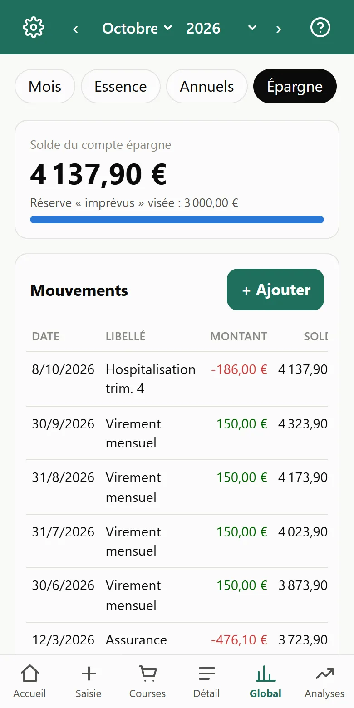
Faire le point et fixer ses budgets
Le dimanche, tranquillement : comment évoluent les dépenses ?
Les 12 derniers mois
Touchez Analyses en bas. Le graphique montre les dépenses de chaque mois. Touchez une catégorie (Légumes, Pain…) pour ne voir qu'elle, et touchez une colonne pour lire le montant exact.
Orienter le budget
Pour chaque catégorie, l'application affiche ce mois-ci et la moyenne des 3 et 6 derniers mois. Une tendance en rouge signale une hausse.
Tapez un budget mensuel dans la case, ou touchez le montant proposé (par exemple 45,00 € ?) pour l'accepter. Ces budgets alimentent les barres et les alertes du tableau de bord, ainsi que la liste de courses.
Prévision sur 12 mois
Tout en bas, l'application estime ce qu'il restera sur l'année, au rythme actuel. C'est le bon endroit pour prévoir les imprévus : si la marge est positive, elle indique combien mettre de côté chaque mois.
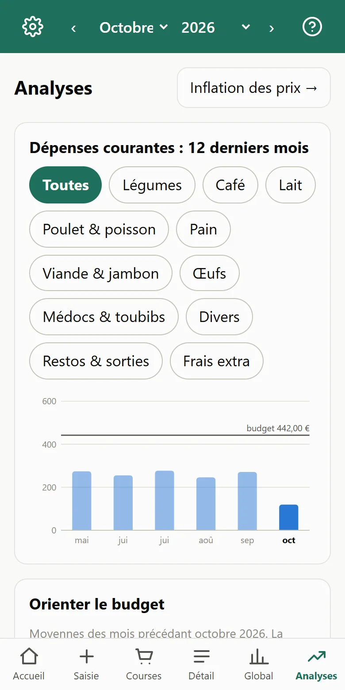
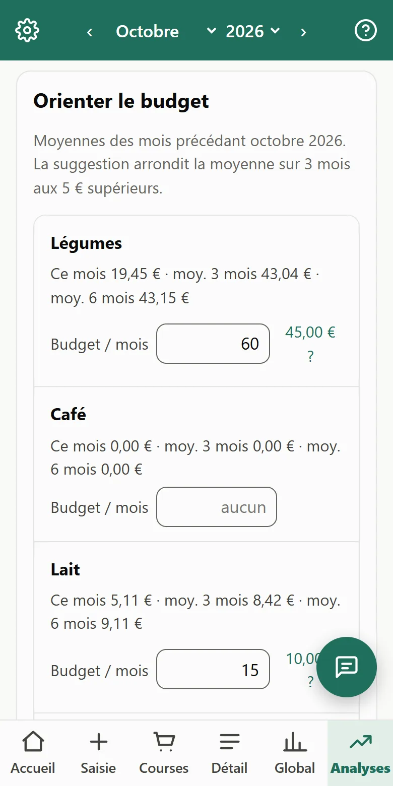
Suivre les prix
Les bananes ont-elles augmenté ? Où sont-elles les moins chères ?
Inflation des prix
Depuis Analyses, touchez Inflation des prix →. Pour les légumes et le divers, chaque ligne compare le premier et le dernier prix d'un article dans un même magasin, hors promotion :
- + en rouge : le prix a augmenté ;
- − en vert : il a baissé ;
- ⚠ à vérifier : l'écart dépasse 50 %. C'est souvent un format différent (un pack au lieu d'une pièce, une autre taille) plutôt qu'une vraie hausse.
Les prix sont comparés à la pièce (grâce à la case Nombre) ou au kilo.
L'évolution d'un produit
Touchez une ligne pour ouvrir la fiche du produit. Elle montre un graphique avec une couleur par magasin et l'historique de tous les achats.
Les petits cercles vides sont des prix relevés dans d'autres magasins. Le cadre jaune indique si on peut trouver moins cher, et de combien.
Depuis la saisie aussiLe lien « évolution du prix » dans le cadre bleu de la saisie ouvre directement cette fiche.
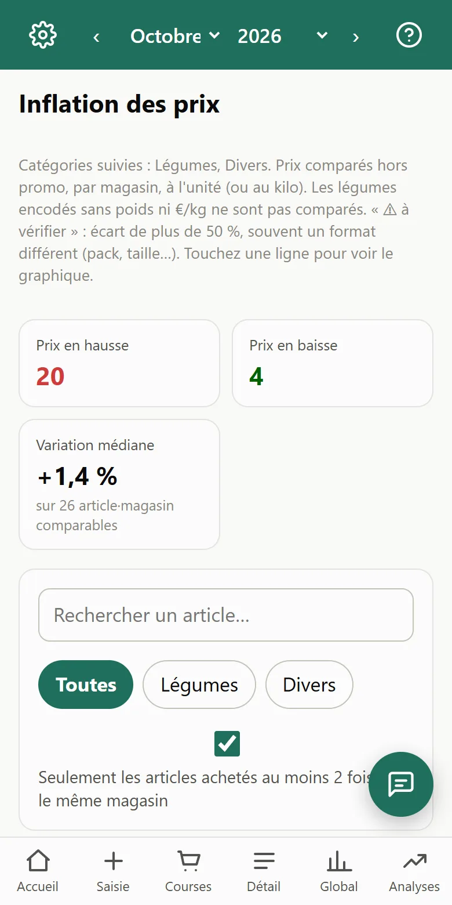
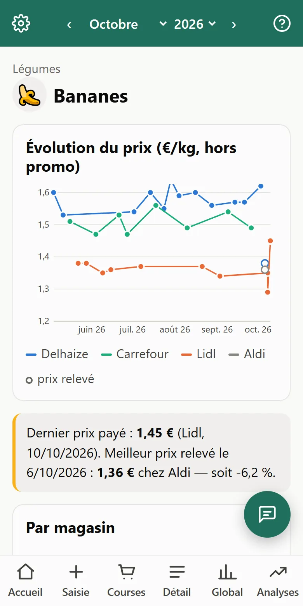
Demander à l'assistant
Une question sur vos dépenses, ou envie de savoir où un produit est le moins cher ?
Ouvrir l'assistant
Touchez Assistant dans la barre du bas, ou la bulle verte sur n'importe quel écran. Parlez (🎤), écrivez, ou touchez une des questions proposées.
Pendant qu'il travaille, une pièce qui tourne et des petits messages vous disent où il en est : « Je consulte vos comptes… », « Je compare les magasins… ».
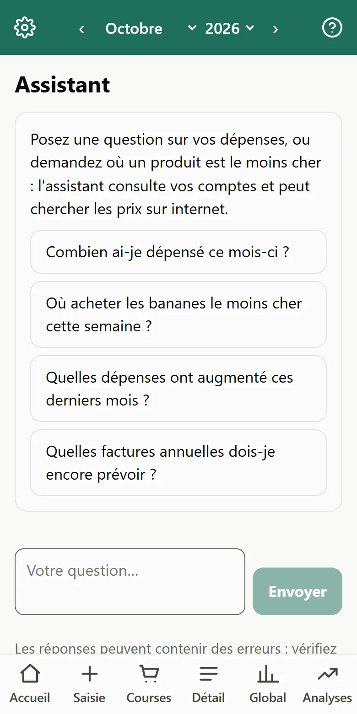
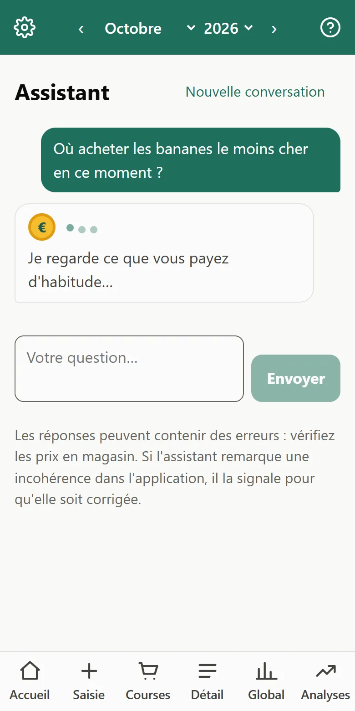
Ce qu'on peut lui demander
- Sur vos comptes : « Combien ai-je dépensé ce mois-ci ? », « Combien pour les restos depuis le printemps ? », « Quelles factures annuelles dois-je encore prévoir ? ». Il lit vos comptes pour répondre.
- Sur les prix : « Où acheter les bananes le moins cher en ce moment ? ». Il cherche sur les sites des magasins belges et compare avec ce que vous payez d'habitude.
- Des conseils : « Sur quoi pourrais-je faire des économies ? ».
Si l'assistant trouve des prix intéressants, demandez-lui « enregistre ces prix » : ils apparaîtront dans Meilleurs prix.
Il retient vos préférences. Dites-lui par exemple « je préfère les montants sans centimes » ou « je fais mes courses le mardi » : il s'en souviendra les fois suivantes. Pour qu'il oublie, dites-le-lui simplement.
Il peut encoder pour vous. Dites par exemple « j'ai acheté du pain gris à 3,20 € à la boulangerie aujourd'hui, ajoute-le » ou « ajoute la pension de 1 850 € ». Avant d'enregistrer, il vérifie que ce n'est pas déjà encodé (même article à un jour près, même montant…) et vous prévient s'il trouve un doublon possible. Il dit toujours ce qu'il a ajouté, et dans quel mois.
Il peut aussi supprimer. « Supprime le croissant que je viens d'encoder », « retire l'article Bdin, c'est un doublon » : il vous montre d'abord exactement ce qu'il va supprimer et vous demande « Je supprime bien ceci ? ». Rien n'est effacé avant votre « oui ».
Une erreur ? Dites simplement « annule » : il retire ce qu'il vient d'ajouter, remet ce qu'il vient de supprimer, ou remet l'ancien montant s'il en avait modifié un.
Vos remarques sont vérifiées. Si vous lui dites « il manque mes œufs du 4 octobre » ou « ce montant est faux », il regarde dans vos comptes et vous explique ce qu'il trouve.
Vos conversations sont gardées sur votre compte : sur le GSM, la tablette ou l'ordinateur, vous retrouvez la dernière là où vous l'aviez laissée. Elles sont rangées en groupes (Tickets, Encodage, Questions, Prix et courses…), choisis automatiquement d'après la première question. Le bouton 🕘 Conversations, en haut, les montre groupe par groupe : touchez-en une pour la reprendre, 📁 Déplacer… pour la changer de groupe (ou en créer un nouveau, par exemple « Santé »), 🗑 pour la supprimer, et + Nouvelle ici pour commencer une conversation dans ce groupe. 🗑 Effacer toutes les conversations, en bas de la liste, les efface d'un coup. Elles ne s'effacent jamais toutes seules, et vos comptes ne sont jamais touchés.
Tout cela se fait aussi en parlant : « recommence une nouvelle conversation », « reviens à la conversation sur les bananes », « range cette conversation dans le groupe Santé », « supprime cette conversation » (il demande confirmation avant d'effacer).
Dans une longue conversation, l'assistant résume de lui-même les anciens messages pour rester rapide et bon marché : vous n'avez rien à faire, et tout reste affiché à l'écran.
Patience pour les prixUne question sur vos comptes prend quelques secondes. Une recherche de prix sur internet peut prendre une à deux minutes : laissez l'écran ouvert. Certains magasins (Colruyt, Aldi) n'affichent pas tous leurs prix en ligne ; l'assistant vous le dira. Une recherche trop longue est écourtée automatiquement pour limiter les frais : il répond alors avec ce qu'il a déjà trouvé.
Il peut se tromperVérifiez les prix en magasin. Et si l'assistant remarque quelque chose d'anormal dans l'application (un total qui ne colle pas, un article en double…), il le signale automatiquement pour que ce soit corrigé, et vous le dit.
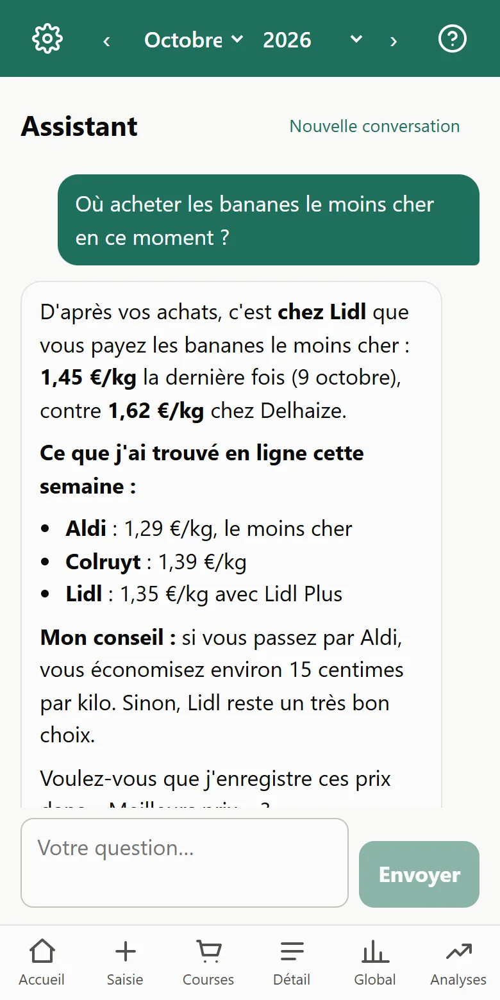
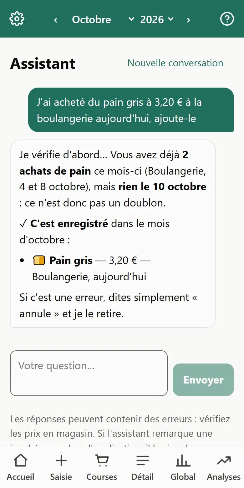
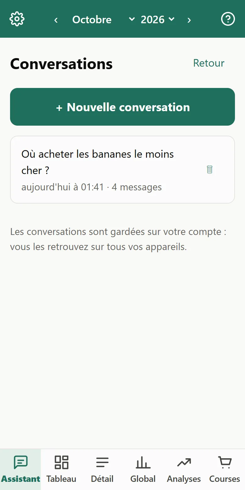
Bon à savoir
Un achat du 28 septembre, il compte dans quel mois ?
En octobre, automatiquement : le mois commence le 26, jour de la pension. Un ticket du 26 septembre au 25 octobre compte donc en octobre. Il suffit d'indiquer la bonne date du ticket.
Comment changer de mois ?
Avec les flèches ‹ › en haut de l'écran, ou en touchant le nom du mois ou l'année.
Le solde du mois précédent est faux.
Dans Global, touchez la ligne « Solde fin … » et tapez le bon montant. Pour revenir au calcul automatique, videz la case.
Les textes sont trop petits.
Touchez la roue dentée ⚙ en haut à gauche. Tout en haut, dans Taille du texte, choisissez Grand ou Très grand : tout l'écran grandit aussitôt. Le réglage est propre à chaque appareil (GSM, tablette).
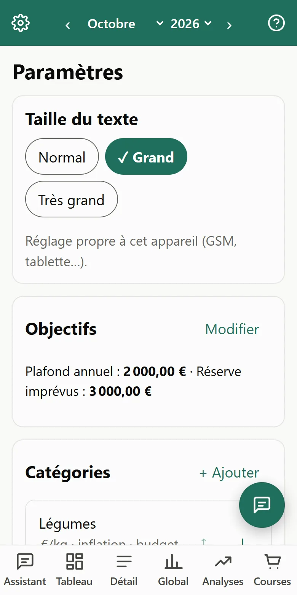
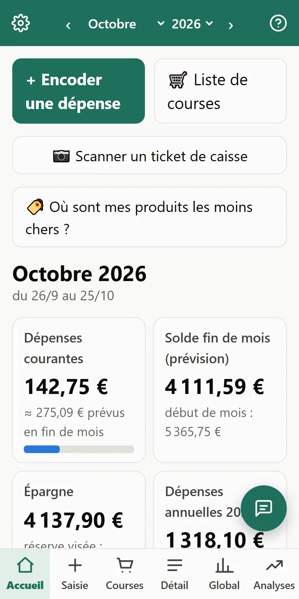
La voix de l'assistant est désagréable.
Roue dentée ⚙, puis Voix de l'assistant. Par défaut, l'assistant parle avec une voix naturelle fabriquée en ligne, chaleureuse et posée : choisissez celle qui vous plaît (voix de femme ou d'homme), chaque choix lit un exemple. Réglez aussi la vitesse : Lente, Normale ou Rapide.
Sans internet, c'est la voix du téléphone qui prend le relais. Vous pouvez aussi la choisir vous-même (Voix du téléphone) : peu de voix dans la liste ? Sur Android, installez « Synthèse vocale Google » ; sur iPhone, téléchargez une voix française « améliorée » (Réglages → Accessibilité → Contenu énoncé → Voix).
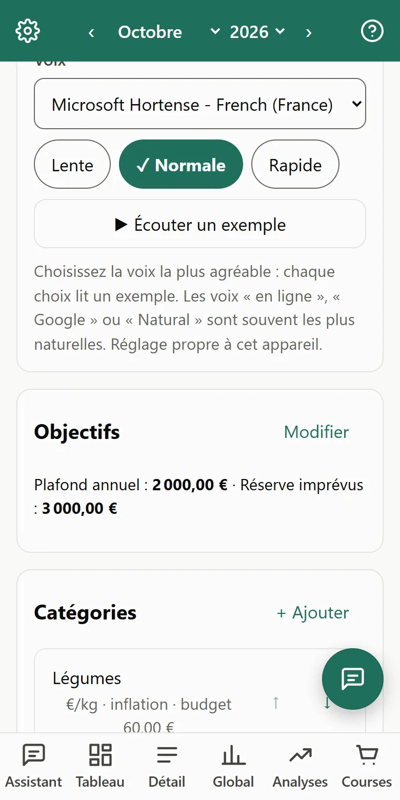
Changer l'icône d'un article.
Roue dentée ⚙, puis Articles : choisissez la catégorie et touchez l'article. Dans Icône, mettez l'émoji de votre choix (sur le clavier du téléphone, touche 😊). Laissez la case vide pour revenir à l'icône automatique.
Je me suis trompé de catégorie pour un article.
Touchez la roue dentée ⚙ en haut à gauche, puis Articles. Choisissez la catégorie, touchez l'article, et changez sa catégorie ou son nom.
Où régler les catégories, les magasins et les objectifs ?
Avec la roue dentée ⚙ en haut à gauche : budget de chaque catégorie, ordre d'affichage, magasins, plafond des dépenses annuelles et réserve « imprévus » visée.
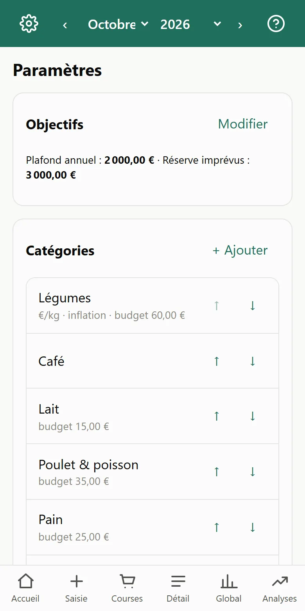
Les « meilleurs prix » sont-ils à jour ?
Ils datent de la dernière recherche de prix, dont la date est indiquée en haut de la page Meilleurs prix. Ils sont mis à jour sur demande : s'ils vous semblent anciens, demandez une nouvelle recherche.
Faut-il du réseau ?
Oui, pour enregistrer : les données sont conservées en lieu sûr sur internet, pas seulement dans le téléphone. Si le téléphone est perdu ou changé, rien n'est perdu : il suffit de se reconnecter.
Qui peut voir mes comptes ?
Personne d'autre que vous : il faut votre e-mail et votre mot de passe. L'application est protégée de façon que chaque compte ne voie que ses propres données.
J'ai oublié mon mot de passe.
Demandez à la personne qui a installé l'application : elle peut le remettre à zéro.
Où retrouver cette notice ?
Dans l'application, touchez le ? en haut à droite de l'écran.